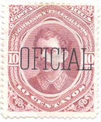
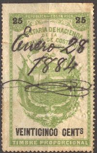

Return To Catalogue - Costa Rica
Note: on my website many of the
pictures can not be seen! They are of course present in the
catalogue;
contact me if you want to purchase it.
Various postage stamps received the overprint 'Oficial' or 'OFICIAL' from 1883 onwards.
1 c green (black or red overprint) 2 c red (black or red overprint) 5 c lilac (red overprint) 10 c yellow (green overprint) 40 c blue (red overprint)

1 c brown 2 c blue 5 c orange 5 c violet 10 c yellow 10 c brown 20 c green 50 c red
(Sorry, no picture availalbe yet)
1 c green 2 c orange 5 c lilac 10 c green 20 c red 50 c blue


1 c green and black (statue of Juan Santamaria) 2 c red and black (Juan Mora) 4 c lilac and black (Jose M.Canas) 5 c blue and black (Puerto Limon) 6 c olive and black (Julian Volio) 10 c brown and black (Braulio Carillo) 20 c red and black (theatre building) 25 c violet and black (Eusebio Figureoa) 50 c brown and blue (Jose M.Castro) 1 Col brown and black (Birris bridge) With additional overprint 'PROVISORIO' (1903) 2 c red and red
Remainders were cancelled with 5 parallel lines.
Sorry, no picture available yet
1 c brown and black 2 c green and black 4 c red and blue 5 c yellow and blue 10 c blue and black 20 c green and black 25 c violet and black 50 c lilac and blue 1 Col brown and black Further surcharged '1921-22' 4 c red and blue 6 c on 1 c brown and black 20 c on 25 c violet and black 50 c lilac and blue 1 Col brown and black
Sorry, no picture available yet
5 c orange 10 c blue Further surcharged (1921) '10 CTS.' on 5 c orange
Sorry, no picture available yet
'15 CENTIMOS' (red) on 20 c olive
The first non-overprinted official stamps of Costa Rica appeared in 1926, they have 'OFICIAL' incorporated in the design.

(Images obtained thanks to Francisco A. Di Napoli)
5 c blue and black 10 c brown and black 15 c green and black 20 c red and black 25 c grey and black 30 c brown and black 40 c yellow and black 50 c lilac and black
Most values (except 5 c and 10 c) exist with remainder cancel consisting of five parallel lines (see under postage stamps for examples).
(Sorry, no pictures available yet)
2 c red 4 c blue 8 c green 10 c violet 20 c brown
5 c violet 10 c green 20 c red 50 c blue
All these stamps are relatively rare.
Here with 'Correos' overprint, used as a postage stamp
5 c yellow 5 c lilac (1927) 10 c blue 10 c brown (1927) 25 c violet 40 c green (1927) 50 c red 50 c blue (1927) 1 C brown 1 C orange (1927) 2 C red (exists in two shades of red) 5 C green 10 C red
Some of these stamps exist with a 'Correos' overprint to serve as a postage stamp.
Here with 'Correos' overprint
5 c orange 10 c blue 25 c violet 50 c brown 1 C brown 5 C red 10 c brown
Some of these stamps exist with a 'Correos' overprint to serve as a postage stamp.
(-) blue
(Reduced sizes)
Forged overprints exist, examples:
(Forged overprints)
At least the forger Fournier made forged overprints. Examples, taken from a 'Fournier Album of Philatelic Forgeries':
Five different forged 'GUANACASTE' or 'Guanacaste' overprints
made by Fournier.
Inscription 'SECRETARIA DE HACIENDA DE LA REPUBLICA DE COSTA RICA'

In this 1870 design were issued: 5 c black, 10 c brown, 25 c green, 50 c red, 1 P orange, 2 P brown, 2 1/2 P violet, 5 P green, 10 P green, 25 P red, 50 P violet and 100 P blue. The value is always in black. An error 10 c green also seems to exist.
(1883 issue)
More fiscal stamps exist.
In 1883 the above design with letters in the background was issued in the values 5 c black, 10 c brown, 25 c green, 50 c red, 1 P orange, 2 P brown, 2 1/2 P violet, 5 P green, 10 P green and 25 P red.
Examples:
(Reduced sizes)
Reduced size, I've seen 5 c orange in the same design.
A very illustrative cancel of 'PUNTA-ARENAS' of 1848 with an
image of a ship.
Some genuine stamps of Costa-Rica accidentally ended up in the Fournier Album with a 'FAUX' overprint. These were actually stamps that were supposed to have been overprinted by Fournier.


{kind=link}
{kind=link}